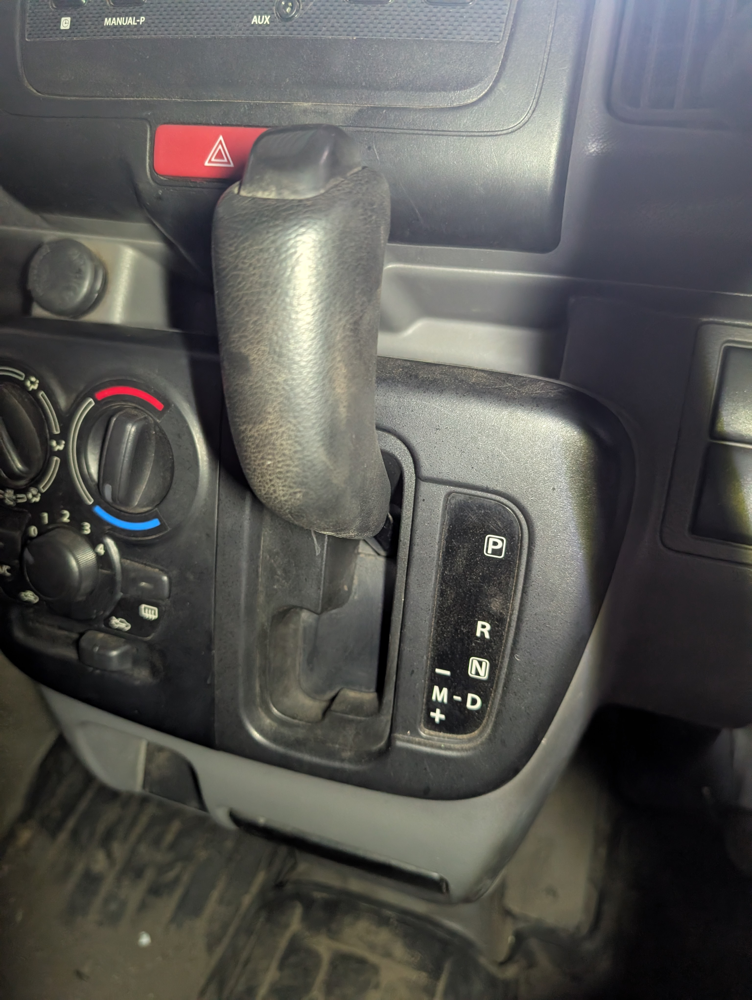
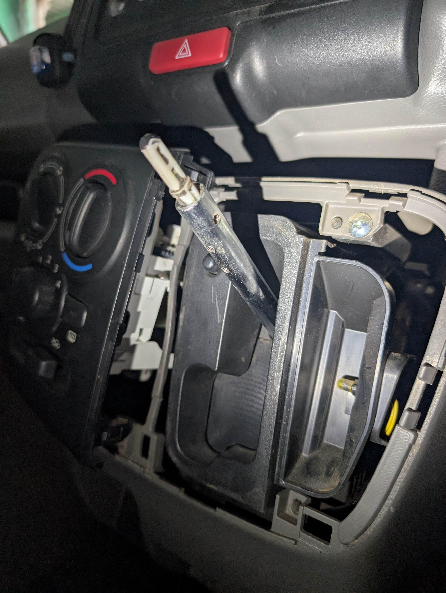

駆動系・ATシフト機構
日産クリッパー ATシフトロック解除不良
車両情報
- メーカー：日産
- 車種：クリッパー
- 故障箇所：シフトノブ内部機構
入庫時の症状
シフトレバーが動かせなくなる症状が発生。 シフトノブのボタンを押しても、 シフトロックが解除されなかった。
診断方法
ブレーキを踏んだ際のシフトロックソレノイドの 作動音を確認。ソレノイドは作動していた。
シフトノブを外し、内部の芯を指で押し込むと スムーズにシフト操作できることを確認した。
故障箇所の写真



故障原因
ボタンを押しても、シフトロック解除に必要な位置まで 可動部が動かなくなっていた。
修理内容
シフトノブを交換してみたいが時間がなかったのでシフトノブ内部の芯を肉盛りして補修。 組み付け後、シフト操作を確認した。
修理後の確認
シフトレバーが正常に操作できることを確認。 今回は補修対応とし、今後は経過観察とした。